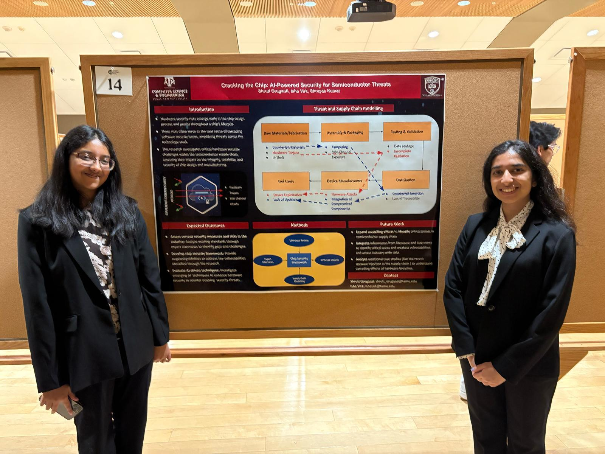
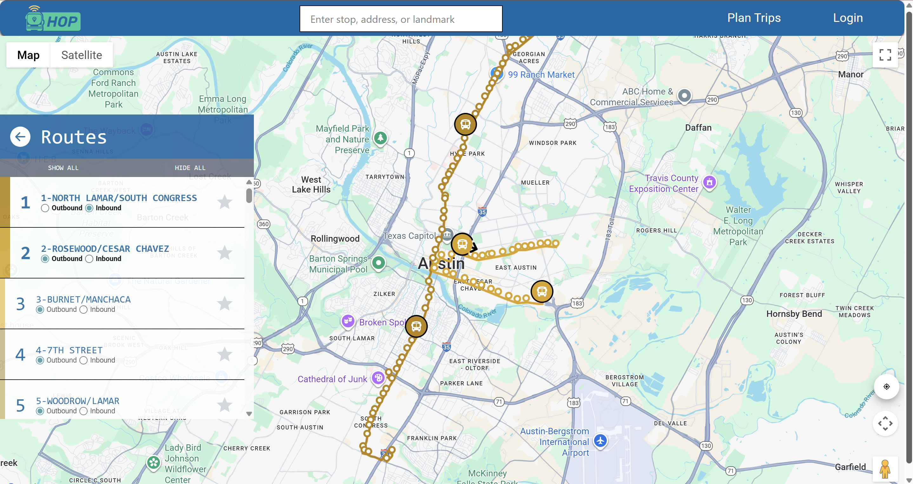
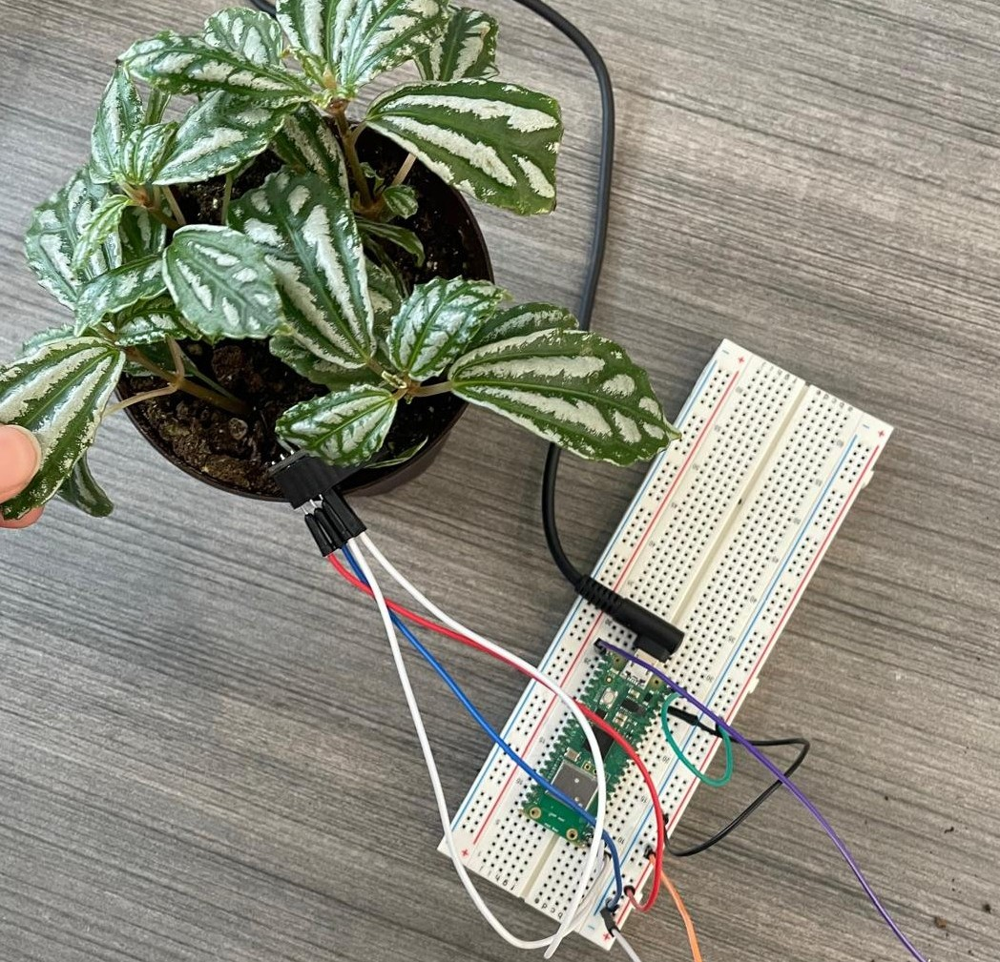

Portfolio
Research: AGGIES Lab
As an undergraduate research assistant at Aggies Lab, I co-authored a research paper proposing an AI based framework to detect anomalies in the semiconductor supply chain at their source to avoid propagation. The paper has been accepted for publication at the ICAIR 2025 conference in Genoa, Italy. Lab Website
Research Interests
- AI in Hardware Design
- Chip Design
- Threat Modeling
Software
CapMetro
CapMetro is a web-based application that gives users access to a live, interactive map view to see real-time locations of public buses in Austin, TX. I helped design this application with an amazing team of 7 other software engineers. It helps users view active routes, compare scheduled vs. actual arrival times, and store frequent routes for easy access or even save trips that they find convenient. All information was sourced from the Texas Open Data Portal and integrated through WebSockets for efficient updates. My main contributions were database management, creating stop and route api calls and creating a compute manual login workflow. Link
Tools and libraries
- Python
- Flask
- PostGresSQL
- Gmail API
- Playwright (for testing)
Hardware
HackPlant
HackPlant is a smart home watering system that provides real-time updates about the conditions of their plant, and automatically waters plants when needed. Using a Raspberry Pi Pico and humidity sensor, the temperature and moisture levels of the soil are constantly recorded and uploaded to the graphs. The graphs are refreshed every 10 seconds to display the current state of the plant. There is a set threshold to automatically detect when to water the plant and when to stop delivering water. Link for more information.
Tools and parts
- MicroPython
- Raspberry Pi
- AHT21 High Presicion Sensors
- Microservo Mini Motor

Pipeline CPU
Building on the 5-stage RISC CPU that I built through the course of a semester in Computer Architecture, I developed a pipeline version of the same. It includes an implementation of pipeline registers to improve parallelism and instruction latency, optimized control logic, and data hazard handling to achieve better throughput and minimizing performance penalties. Link to Github. Link to an article explaining it in more detail.

Concepts and Tools
- Verilog
- CPU Architecture
- Hardware Verfication
- Wave simulation